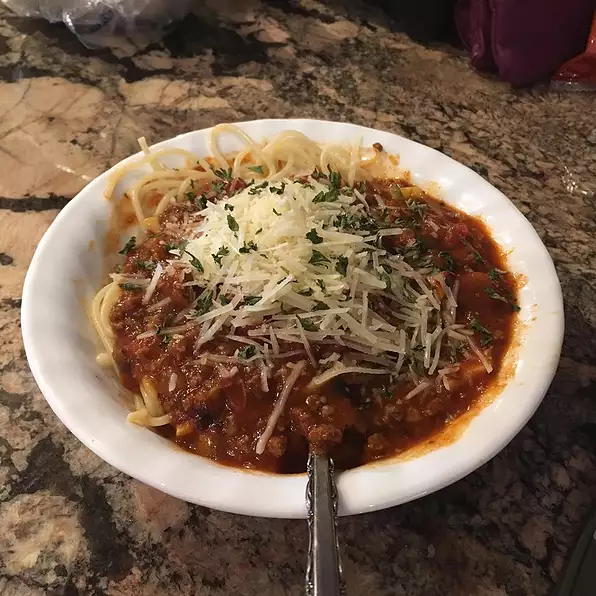

Spaghetti Bolognese

This is a quick and easy recipe to make for Jack when he come home from school and says i'm starving
Spaghetti Bolognese Recipe
Ingridients
- 200g beef
- 1 large onion
- 10 mushrooms
- can of tinned tomatoes
- 1/2 cup worcestershire sauce
- 1/4 cup chili powder
- 3 Teaspoons cajun seasoning
Directions
- Cook the ground beef in a large pot over high heat, stirring quickly and constantly until completely browned 7 to 10 minutes. Stir the onion into the beef; cook and stir until the onion begins to turn translucent, about 5 minutes more. Drain excess grease from meat mixture. Add the mushroom to the mixture; allow to cook until it begins to soften, 1 to 2 minutes. Pour the diced tomatoes and tomato soup into the pot, stir, reduce heat to medium, and bring the mixture to a simmer.
- Add the Worcestershire sauce, garlic and herb seasoning blend, lemon juice, garlic, chili powder, Cajun seasoning, basil, vanilla extract, black pepper, and salt to the mixture, stirring each into the mixture before adding the next. Reduce heat to low and allow the mixture to simmer for 30 minutes.
- Bring a large pot of lightly salted water to a rolling boil. Add the spaghetti and olive oil to the pot and cook the pasta at a boil until cooked through yet firm to the bite, about 12 minutes. Drain. Top with the Bolognese sauce to serve.